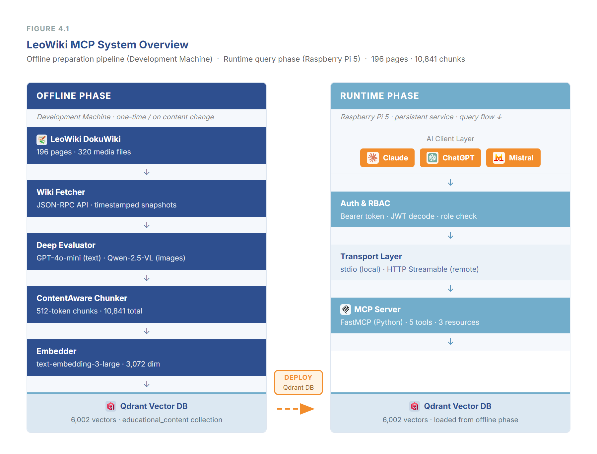
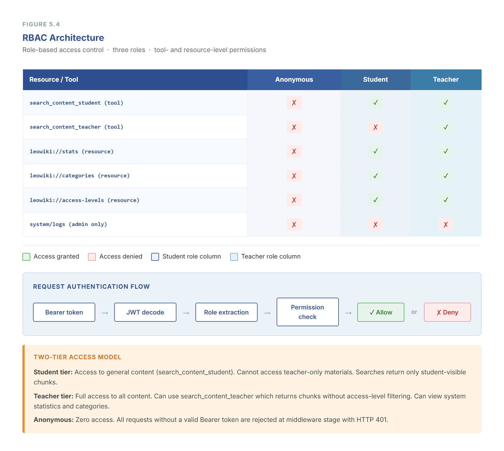
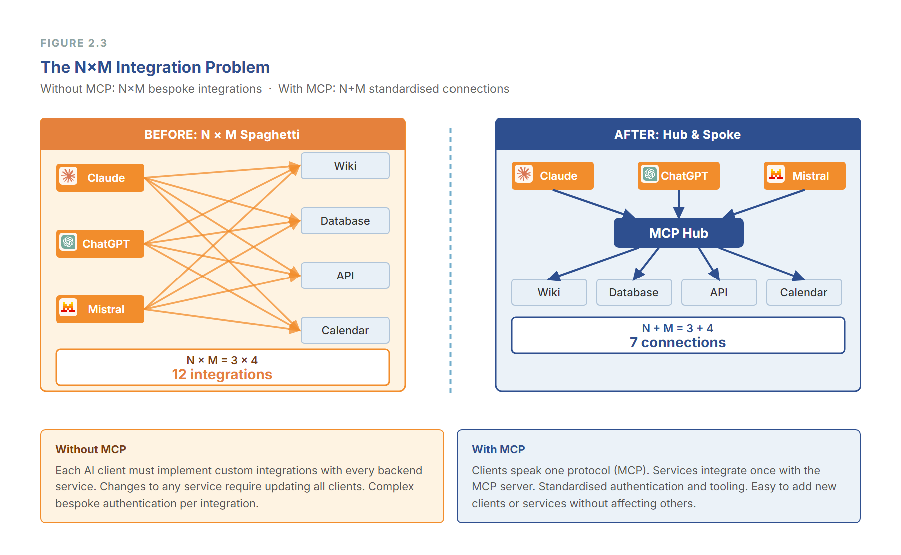
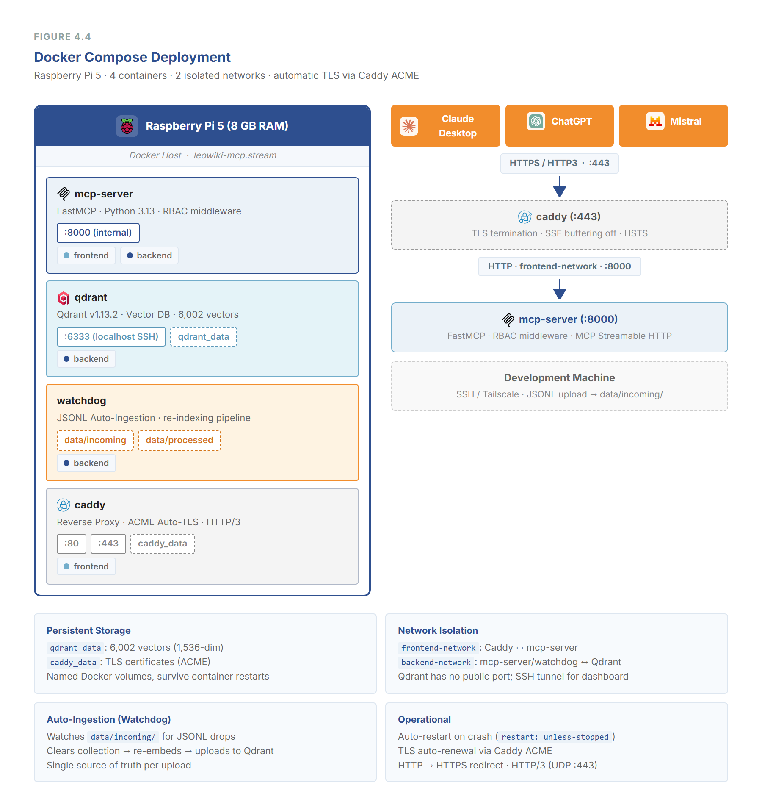
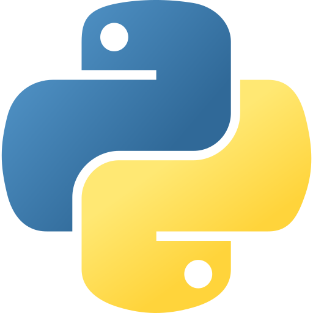
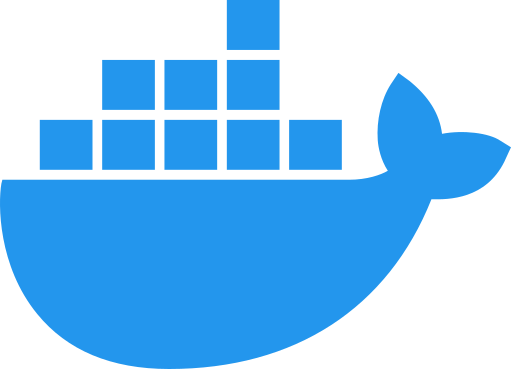
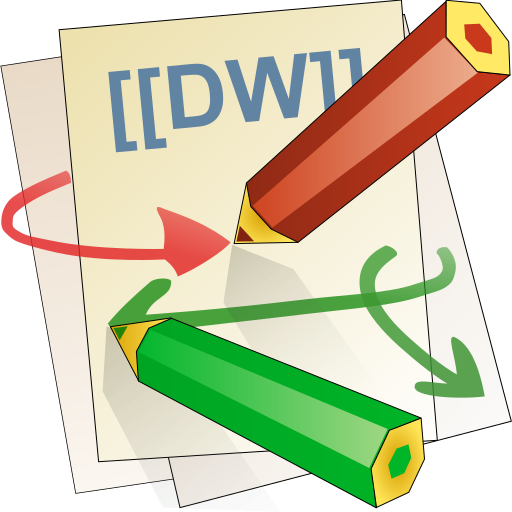
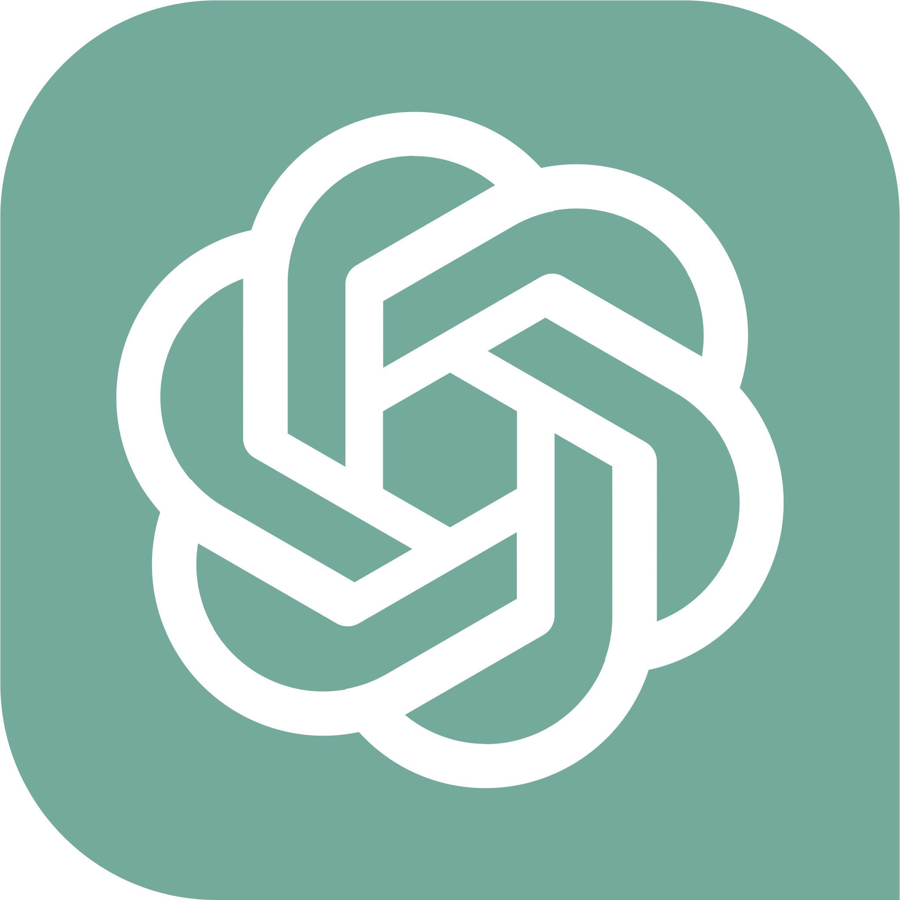
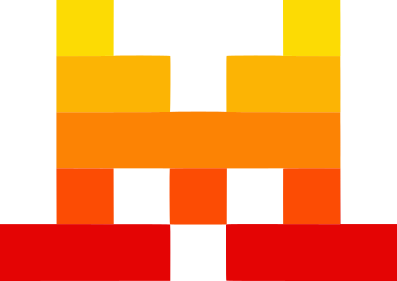

Case study · Diploma thesis 2026 · HTL Leonding
The school wiki's keyword search fails on natural-language questions. We built the missing layer: a vector database with German‑optimized embeddings behind an MCP server, so AI assistants like Claude, ChatGPT and Mistral Le Chat can answer questions from the wiki — permission-aware, self-hosted.
Measured on 78 verified question-answer pairs across 12 wiki namespaces (10,841 indexed chunks).
Bars show MRR on a 0–1 scale:
DokuWiki keyword search
Semantic RAG retrieval
Two phases: an offline preparation pipeline and a runtime query flow on the Raspberry Pi 5.

Content evaluation with GPT-4o-mini (text) and Qwen-2.5-VL (images & PDF graphics) before content-aware chunking.
FastMCP 3.0 (Python) with a two-tool RBAC search design, five middleware layers, MCP resources & prompts — over stdio and HTTP Streamable.
OAuth 2.1 via Scalekit, JWT role decoding and role-based access control on every search — teachers, students and admins each see only their content.


Five embedding models on the full wiki corpus. Octen‑4B leads on retrieval quality but does not run on the Pi — production uses the OpenAI API model just 0.011 MRR behind:
Methodology: MRR, nDCG@10, MAP, precision@k, hit rate + LLM-as-Judge and RAGAS · chunk-size experiments (256/512/1024) · hybrid vs. dense retrieval · keyword baseline · Wilcoxon signed-rank tests with bootstrap confidence intervals.
A Raspberry Pi 5 (8 GB, ARM64) runs four Docker Compose services: Caddy for TLS and reverse proxy, the MCP server, Qdrant for vector search, and a watchdog for JSONL auto-ingestion. Mean end-to-end search latency is ~226 ms over stdio and ~321 ms over HTTP.

Production stack



Remote MCP ✓ · OAuth 2.1 ✓ · Tools ✓

Remote MCP ✓ · OAuth 2.1 ✓ · Tools ✓

Remote MCP ✓ · OAuth 2.1 ✓ · Tools ✓
Gemini and Copilot (consumer) did not support remote MCP with OAuth 2.1 as of February 2026 — documented in the thesis compatibility matrix.
The system is split across two repositories of mine. The thesis itself is joint work with Imre Obermüller, whose deployment repository is linked separately.
mcp-server-leowiki release in progressDA_2026_dev_dito